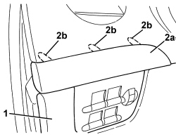
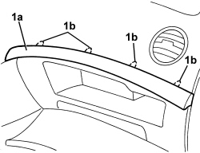

7040A58 INSTRUMENT PANEL MOULDING - R+R
- Path
- Procedures > 70 FITTINGS > 7040 BODY INTERIOR FITTINGS AND TRIM > 7040A PASSENGER COMPARTMENT TRIMS > 7040A58 INSTRUMENT PANEL MOULDING - R+R
- Kind
- repair procedure (removal / refitting; the operation number is the code)
- Applies to
- all engines; all production periods
- Interactive page
- https://sloeber94.github.io/elrnDB-aBrrSpdr/en/#/946002615
Applies to: all engines; all production periods
 Removing
Removing
 Refitting
Refitting- Proceed as follows for the driver's side moulding.
1. Open the fuse box cover releasing the internal retainers.
2. Remove the moulding (2a) releasing the retainers (2b).

Applies to: all engines; all production periods
- Proceed as follows for the passenger side moulding.
- Open the glove compartment lid.
1. Remove the moulding (1a) releasing the retainers (1b).

Applies to: all engines; all production periods
Refitting
Removing- Check that the moulding is not damaged.
- Refit the moulding and attach the retainers.
- Close the glove compartment lid or, alternatively, the fuse box cover.
Topics that link to this page (7)
- 1820B21 MASTER CYLINDER (PUMP) - R R FOR RIGHT HAND DRIVE VERSIONS
- 3330B02 PEDAL ASSEMBLY - R.R
- 3330B23 BRAKE PEDAL - R.R. FOR RIGHT HAND DRIVE VERSIONS
- 3330B27 CLUTCH PEDAL - R.R. FOR RIGHT HAND DRIVE VERSIONS
- 3330B42 PEDAL UNIT SUPPORT - R.R. FOR RIGHT HAND DRIVE VERSIONS
- 3330D18 BRAKE SERVO R R FOR RIGHT HAND DRRIVE VERSIONS
- 7040A56 SWITCH UNIT IN DASHBOARD - R.R.